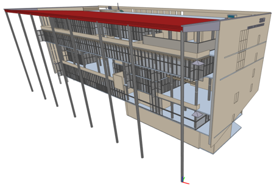
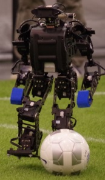

Email:
zjuyinhuan AT gmail.com
eehyin AT ust.hk
Footstep Map
Huan YIN 尹欢
Bio
Dr. Huan Yin received the B.Eng. and Ph.D. degrees from Zhejiang University (ZJU), at Hangzhou, in 2016 and 2021, respectively. He was a visiting scholar at University of Technology Sydney (UTS). His Ph.D. work focused on robot localization and mapping, as well as autonomous navigation systems. After graduation, he worked at National University of Singapore (NUS) as a Research Fellow. Then he joined the Hong Kong University of Science and Technology (HKUST) as a Research Assistant Professor. Dr. Yin is a member of HKUST Robotics Institute.
Research Interests
Publication
GithubResearchGate
Google Scholar
Web of Science (Publons)
Gallery



